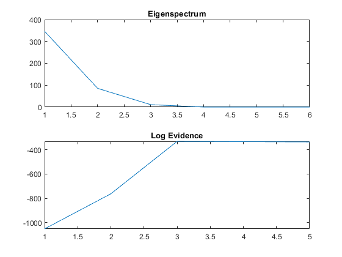

% This script demonstrates Bayesian PCA applied to data generated from a % known number of latent sources % Sample size N=100; % Define the true source mixing matrix with 3 sources, each row corresponds % to a measurement channel a=[9 7 1;2 4 7;1 3 8; 3 2 1; 1 1 0.5; 7 2 8]; [d,M]=size(a); % d = number of observed variables, M = number of sources % Generate random source signals s=randn(M,N); % Observation noise variance obs_noise=0.1; % Generate observed data as a linear mixture of sources + noise X=a*s+sqrt(obs_noise)*randn(d,N); % Perform Bayesian PCA to estimate the optimal number of sources [p_opt,log_ev,lambda]=spm_pca_order(X); % Plot eigenvalues subplot(2,1,1); plot(lambda); title('Eigenspectrum'); % Plot log model evidence for models with different numbers of components subplot(2,1,2); plot(log_ev); title('Log Evidence'); disp(sprintf('Estimated number of sources is %d',p_opt));
Estimated number of sources is 3